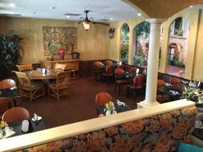
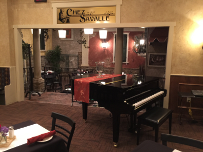
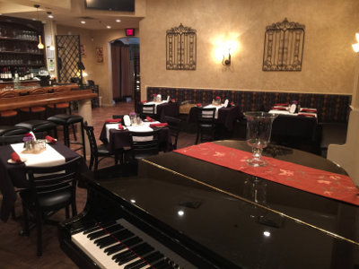
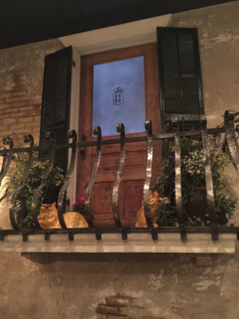
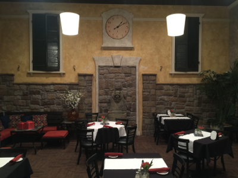
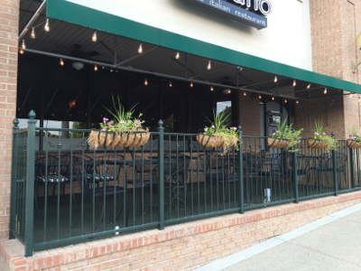

Our Restaurant
Tradizionale Dining
Relax in our traditional dining room featuring a Mediterranian atmosphere. Whether you're looking for a romantic dinner for two or dining with family and friends, old world charm provides the perfect ambience for a memorable dining experience.
Chez Savalle
 On weekends enjoy Live Music, where you can find Dave McConnell and other singers and musicians performing jazz standards and pop favorites accompanied on the baby grand by some of Huntsville's most accomplished jazz pianists.
The quarters are cozy, as one would expect for a European style venue; classy, yet inviting with a sense of casual elegance. The fireplace anchors the room, and the traditional oak bar is the perfect place to enjoy fine wine or a favorite cocktail.
Enjoy the musical atmosphere of Chez Savalle any night, whether you're stopping in for a drink and appetizers, or enjoying a four course dinner of Luciano's Italian cuisine.
Courtyard
Four steps down from Chez Savalle Piano Bar, you are suddenly transported into the courtyard of a small Italian village. Looking around, you have the sense that quaint apartments overlook the tables nesteled in the square. The high ceiling gives the room an airy feel, while the open wall back into Chez Savalle allows you enjoy Live Music>, from our piano bar.
Adding to the room's charm, a bit of Huntsville history adorns the Courtyard. The antique shutters of the windows, and glass door of the balcony hail from the original Monte Sano Hotel, a three-story Queen Anne–style luxury health resort that opened in 1877
Terrace
For those that delight in "Al Fresco" dining, we offer our beautiful front Terrace. Leisurely sip a glass of wine while you read a book, converse with friends, or simply enjoy the soft summer breeze. Our moderate southern climate allows for comfortable outdoor dining from March through October.